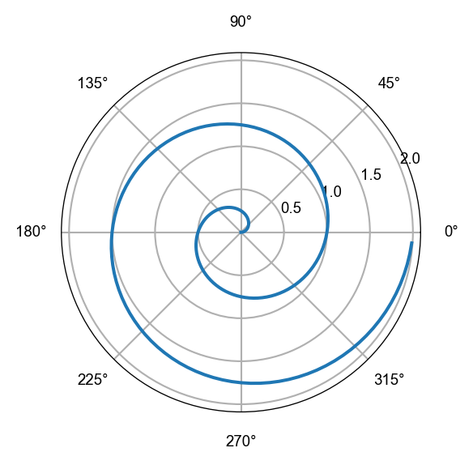

import numpy as np
import matplotlib.pyplot as plt
import matplotlib as mpl
from tqdm import tqdm
from scipy import stats
import session_info
%config InlineBackend.figure_format='retina'
mpl.rc('font',family='Arial')
plt.rcParams['font.family'] = 'sans-serif'
plt.rcParams['font.sans-serif'] = ['Arial']
plt.rcParams['axes.linewidth'] = 0.5
plt.rc('xtick', labelsize=7) # fontsize of the tick labels
plt.rc('ytick', labelsize=7) # fontsize of the tick labels
plt.rcParams['figure.figsize'] = (4, 3)
plt.rcParams['font.size'] = 6
%load_ext autoreload
%autoreload 2diffusionBayes
Part 1 - Simulating and analyzing individual trajectories
Welcome to the first post in a multi-post series about analyzing diffusive particles trajectories to infer their uncertain diffusivities. All of the code for this project can be found by clicking the link in the titile of this post that’ll take you to the project repository.
I’m a firm believer that good inference is enabled by becoming familiar with the data generating process as a way to (1) validate your ability to recover, “true”, hidden parameters, and (2) see how our models might fail to capture relevant features within the observed data.
This first post will consider simulated 2-dimensional random walkers with no directional preference (isotropic), which are perfectly well resolved by our camera, or observer, and are built into our simulate class. We’ll build in complexity as we go, including the opportunity for our particles to:
- drift from convective flows
- get “stuck” on the experimental cell, or media (using potential wells)
- be drawn from different populations, this one is really cool
- have different sub- and super-diffusive behaviours
we’ll use a couple of different inference strategies, in our infer class:
- conventional mean squared displacement analysis
- a Bayesian analog of the more conventional analysis
- a population based model, again, really cool, especially with short, noisy tracks
discriminating between “good”, and “bad” data using posterior predictive checks, in our check class:
- mean squared displacement
- radius of gyration
- radius of gyration for non-overlapping intervals
while modulating some of the experimental parameters, in our experiment class:
- artificially reduce the signal-to-noise ratio
- introduce uncertainty in the centroids of our diffusing particles
- break up our tracks (because of approximating quasi-3D environment as 2D, or particles fading into background noise)
- artificially constrain the length of our track a consequence of above, but this is the most important
to see how that influences the inference of the diffusivity parameter, \(\widehat{D}\), relative to the true diffusivity, \(D_\text{true}\). When you have long tracks with little uncertainty in the diffusing particle’s position, any inference technique will work. But in the presence of short, noisy tracks, we’ll demonstrate that the posterior predictive checks and population based model significantly outperforms the conventional techniques in reliably estimating the diffusivities.
Finally, we’ll turn it loose on some real, experimental data and see how it performs!
Load libraries
Classes and notation
In order to make the code as reproducible as possible, I wanted to initialize some classes so that once everything is built out, you can initialize the class, call the method that you want to simulate, infer, check, or plot, change the parameters of the experiment around, and see how that impacts our results.
We’re going to start with simulate, and write some of the simplest infer and plot functions for an idealized experiment.
class Simulate:
"""
A class for simulating diffusion processes.
Methods:
generate_brownianMotion: Generates a single isotropic 2D particle trajectory.
"""
def __init__(self):
passNotation
Let’s set out some notation to take forward, the 2D trajectory of the \(j\)-th particle in the \(i\)-th experiment will be summarized by \(\mathbf{X}_{ij}\), where the coordinates of the \(k\)-th time point are \(\[x_{ijk}, y_{ijk}\]\) respectively. The entire trajectory is then given by
\[ X_{ij} = \begin{bmatrix} x_{ij1} & y_{ij1} \\ x_{ij2} & y_{ij2} \\ \vdots & \vdots \\ x_{ijk} & y_{ijk} \end{bmatrix} \]
The reason why it’s useful to do it this way is that our diffusive particles are often captured for varying lengths of time, or numbers of frames, so \(n_k\), the total number of frames observed for the \(k\)-th particle varies and prevents us from using a nice numpy.array() to contain all of our trajectories.
Instead, we’ll use a ragged array, or list of lists structure. All of our functions will accept a single 2D trajectory \(\mathbf{X}_{ij}\) which contains all of the tracked data for that particle alone. Luckily, a lot of the models that we’re working with are conjugate (more on this below) or easy enough to work with that it doesn’t pose a big issue. We can always decorate our code with an @jit from numba or leverage JAX if we need to speed things up.
Units and seeding
We’ll compute everything under the hood in units of pixels and frames, for example, the units of diffusivity would be \(\text{px}^2 / \text{frame}\) under the hood, but will be converted to say \(\mu \text{m}^2 / s\) by setting an argument like return_real_units=True.
In terms of reproducibility, it’s also super important to consider the seeding of each of these functions. You’ll see an argument called base_seed which ensures that whenever we’re sampling random numbers, we can preserve them from run to run.
Initialize simulate class
Let’s initialize our classes, starting with simulate. All of the functions in these posts will be contained in files that are named by the class, so in this case it’ll be simulate.py. You can find the file here.
In the simplest case, our particles will perform 2D random walks, and I’m going to get a bit loose with the notation we just set forth to help things not get too cluttered too early. Wherever I say \(\mathbf{X}_k\) I really mean \(\mathbf{X}_{ijk}\) so the \(k\)-th time point of the \(j\)-th particle in experiment \(i\) is just the \(k\)-th time point. This doesn’t butcher our interpretation too badly because our particle’s motion is assumed to be uncorrelated with eachother, and you’ll see why removing the \(i\) and \(j\) subscripts helps below.
We can express the likelihood of sequential steps \(\mathbf{X}_{k-1} = [x_{k-1}, y_{k-1}]\) and \(\mathbf{X}_k\), during a given time interval \(\tau_k = t_k - t_{k-1}\) as:
\[ p(\mathbf{X}_k \mid \mathbf{X}_{k-1}, D, \tau_k) = \frac{1}{\sqrt{4 \pi D \tau_k}} \exp{\left(- \frac{r_k^2}{4 D \tau_k} \right)} \]
where \(r_k^2 = (x_k - x_{k-1})^2 + (y_k - y_{k-1})^2\) is the 2D displacement of the particle during the time interval \(\tau_k\). If you feel comfortable with the above equation, feel free to skip to the next paragraph, otherwise, read the dropdown note and I’ll tell you how I would make sense of the above because I want everyone to stay on board and engaged for as long as they can.
Note
Note: When we express probabilities, such as \(p(\mathbf{X}_k \mid \mathbf{X}_{k-1}, D, \tau_k)\), variables on the right side of the line (in this case \(\mathbf{X}_{k-1}, D, \tau_k\)) are assumed to be known. Some people or textbooks might say that we’re conditioning on these variables, all that means is that we’re forming our opinion of our unknowns given the things on the right side of the line. So what do we not know? Whatever’s on the left side of the line, in this case it’s \(\mathbf{X}_k\). Some people might call the variables on the left side of the line random, or latent, variables. All that means is that we don’t know their values with certainty. So I would read this as “conditional on our previous position \(\mathbf{X}_{k-1}\), the diffusivity of our particle \(D\), and time lag \(\tau_k\), the likelihoood of the current position of our particle \(\mathbf{X}_k\) is given by the probability density \(\frac{1}{\sqrt{4 \pi D \tau_k}} \exp{\left(- \frac{r_k^2}{4 D \tau_k} \right)}\)”.
Cool, let’s keep going. Now that we’ve considered a single jump between two time points, the rest of the trajectory is pretty simple because in this model, all displacements are assumed to be uncorrelated.
\[ p(\mathbf{X}_k \mid D, \tau_k) = p(\mathbf{X}_0) \prod_{k=1}^K \frac{1}{4\pi D \tau_k} \exp \left( -\frac{r_k^2}{4D \tau_k} \right) \]
where the only new thing I’ve added is the probability of the initial starting point of the particle, \(\mathbf{X}_0\), which is assumed to be uniform across the viewing area.
Brownian motion
Cool, so each displacement in 2D is assumed to have variance \(4 D \tau_k\), which is the sum of independent displacements of \(2 D \tau_k\) in each direction, let’s implement this below and drop it into our simulate.py file. Expand the below notes on alternatives to this implementation
def generate_brownianMotion(D, n_steps, X_start, tau, base_seed):
"""
Generate a single isotropic 2D particle trajectory.
Parameters:
- D (float): Diffusion coefficient [px^2 / frame]
- n_steps (int): Number of steps in the trajectory [frame]
- X_start (tuple): Position at time 0 (x, y) [px, px]
- tau (float): Time step [frame]
- base_seed (int): Random seed for this trajectory
Returns:
- x, y: Arrays containing the x and y positions of the trajectory [px]
Note:
This function uses a independent Gaussian steps to simulate Brownian motion.
The x and y dimensions are assumed to be independent.
"""
np.random.seed(base_seed)
x = np.zeros(n_steps)
y = np.zeros(n_steps)
x[0], y[0] = X_start
for k in range(1, n_steps):
std_dev = np.sqrt(2 * D * tau)
x[k] = x[k-1] + np.random.normal(0, std_dev)
y[k] = y[k-1] + np.random.normal(0, std_dev)
return x, y
Note
Getting fancy: We could also have written the generate_brownianMotion() function as if it were generated from a multivariate Gaussian of variance \(4 D \tau_k\), the results will be the same:
def generate_brownianMotion(D, n_steps, X_start, tau, base_seed):
# ...
np.random.seed(base_seed)
x = np.zeros(n_steps)
y = np.zeros(n_steps)
x[0], y[0] = X_start
# Define the covariance matrix for the multivariate Gaussian
covariance_matrix = [[4*D*tau, 0], [0, 4*D*tau]] # Independent x and y with variance 4Dtau respectively
for k in range(1, n_steps):
step = np.random.multivariate_normal([0, 0], covariance_matrix)
x[k] = x[k-1] + step[0]
y[k] = y[k-1] + step[1]
return x, y
Tip
For the sake of efficiency however, you’ll see that the final implementation takes advantage of the independence of all jumps and instead computes all of the displacements at once, taking the cumulative sum of their displacements.
x[0], y[0] = X_start
x_traj = np.random.normal(loc=0, scale=2*D*tau, size=t.shape[0]-1)
y_traj = np.random.normal(loc=0, scale=2*D*tau, size=t.shape[0]-1)
x[1:] = x[0] + np.cumsum(x_traj)
y[1:] = y[0] + np.cumsum(y_traj)
return x, yLet’s visualize the trajectory!
x, y = generate_brownianMotion(D=0.1, n_steps=300, X_start=(0, 0), tau=1, base_seed=4444)
plt.figure(figsize=(4, 3))
plt.plot(x, y, color=firebrick4)
plt.axis('equal')
plt.xticks([0, -5, -10, -15])
plt.yticks([0, -5, -10, -15])
plt.xlabel('x [px]')
plt.ylabel('y [px]')
passLooks great.
Initialize infer class
In this case, we know exactly what the true diffusion coefficient, \(D_\text{true}\) is because we set it to 1 \(\text{px}^2 / \text{frame}\). Let’s see if we can recover it, and also add our first couple of functions to our infer and plot classes.
Conventional MSD analysis
As we said, we have single particle trajectories in our list of lists, and we want to highlight how short tracks of diffusing particles can be inferred reliably using a hierarchical Bayesian model. At the moment though, we have a really long, perfectly resolved track, so the conventional analysis should be just fine. Remember we have our single particle trajectory, \(\mathbf{X}_k = [x_k, y_k]\) where again I’ve dropped the \(i\) and \(j\) indices to help with clutter. The mean squared displacement (MSD) of a particle during a time lag \(\tau\), \(\text{msd}(\tau)\) evolves linearly in the case of Brownian diffusion, \(\text{msd}(\tau) = 4 D \tau\) (in \(2\text{D}\)). For arbitrary \(\tau\), the MSD is calculated by:
\[ \text{msd}(\tau) = \frac{1}{N-\tau} \sum_{k=1}^{N-\tau} [(x_{k + \tau} - x_k)^2 + (y_{k + \tau} - y_k)^2] \]
So all it takes is for us to plot the \(\text{msd}\) for various values of \(\tau\) to a line to estimate the value \(\widehat{D}\) (if you’re curious why my \(D\) is wearing a hat, click below).
:::{callout-tip collapse=“true”} Because we usually don’t know the true value of a parameter, you’ll see me write it’s estimate with a hat, as in \(\widehat{D}\) to tell you that it’s being fit from the data. This is in constrast to the true value that we had set up earlier in the simualtion, \(D_\text{true}\), which has no hat. :::
As \(\tau\) gets larger and larger, we’ll have less and less data to compute the mean displacement of our particle. To be safe in our averaging, we’ll only use lags from the first 1/3 of the trajectory.
def calculate_msd(trajectory):
x, y = trajectory
t = np.arange(len(x))
lags = np.unique(t // 3).astype(int)[::2]
msd = np.zeros((lags.shape[0], ))
for i, lag in enumerate(lags):
dxlag = np.diff(x[::lag])
dylag = np.diff(y[::lag])
J = dxlag.shape[0]
if J == 1:
continue
else:
msd[i] = np.sum( (dxlag - dxlag.mean())**2 + (dylag - dylag.mean())**2 ) / J
return msd
# def fit_msd(trajectory):Conjugate inverse Gamma analysis
def infer_diffusivity(trajectory, inference_step=1, drift=True):
x, y = trajectory
## compute displacements
idx = (np.mod(t, inference_step)==0)
dt = t[idx][1:] - t[idx][0:-1]
dx = x[idx][1:] - x[idx][0:-1]
dy = y[idx][1:] - y[idx][0:-1]
K = dx.shape[0]
## estimate drift parameters
if drift:
Uhat = np.sum(dx) / np.sum(dt)
Vhat = np.sum(dy) / np.sum(dt)
alpha = K - 2
beta = np.sum(( (dx - Uhat*dt)**2 + (dy - Vhat*dt)**2 ) / (4*dt))
## compute posterior parameters for inverse gamma distribution
else:
alpha = K - 1
beta = np.sum( (dx**2 + dy**2) / (4*dt) )
return alpha, beta
def invGamma_toDiffusivity(alpha, beta, mode=True, point_estimate=False, interval=0.05):
## return the mode
if mode and point_estimate:
mode = beta / (alpha + 1)
return mode
## return the mean
if mode==False and point_estimate:
mean = beta / (alpha - 1) ## give an error if alpha not > 1
return mean
if mode and point_estimate==False:
mode = beta / (alpha + 1)
lower = scipy.stats.invgamma.ppf(interval / 2, a=alpha, scale=beta)
upper = scipy.stats.invgamma.ppf((1-interval)/2, a=alpha, scale=beta)
return mode, lower, upperimport numpy as np
import matplotlib.pyplot as plt
r = np.arange(0, 2, 0.01)
theta = 2 * np.pi * r
fig, ax = plt.subplots(
subplot_kw = {'projection': 'polar'}
)
ax.plot(theta, r)
ax.set_rticks([0.5, 1, 1.5, 2])
ax.grid(True)
plt.show()

Citations
Thumbnail photo from Donna Patterson hosted on the NSF website.
{kind=link}
Session info
session_info.show()Click to view session information
----- matplotlib 3.8.4 numpy 1.26.4 scipy 1.13.0 session_info 1.0.0 simulate NA tqdm 4.66.4 -----
Click to view modules imported as dependencies
PIL 10.3.0 anyio NA appnope 0.1.3 asttokens NA attr 23.1.0 attrs 23.1.0 babel 2.11.0 brotli 1.0.9 certifi 2024.02.02 cffi 1.16.0 charset_normalizer 2.0.4 colorama 0.4.6 comm 0.2.1 cycler 0.10.0 cython_runtime NA dateutil 2.8.2 debugpy 1.6.7 decorator 5.1.1 defusedxml 0.7.1 executing 0.8.3 fastjsonschema NA idna 3.7 ipykernel 6.28.0 jedi 0.18.1 jinja2 3.1.3 json5 NA jsonschema 4.19.2 jsonschema_specifications NA jupyter_events 0.8.0 jupyter_server 2.10.0 jupyterlab_server 2.25.1 kiwisolver 1.4.4 markupsafe 2.1.3 matplotlib_inline 0.1.6 mpl_toolkits NA nbformat 5.9.2 overrides NA packaging 23.2 pandas 2.2.2 parso 0.8.3 pexpect 4.8.0 pkg_resources NA platformdirs 3.10.0 prometheus_client NA prompt_toolkit 3.0.43 psutil 5.9.0 ptyprocess 0.7.0 pure_eval 0.2.2 pydev_ipython NA pydevconsole NA pydevd 2.9.5 pydevd_file_utils NA pydevd_plugins NA pydevd_tracing NA pygments 2.15.1 pyparsing 3.0.9 pythonjsonlogger NA pytz 2024.1 referencing NA requests 2.31.0 rfc3339_validator 0.1.4 rfc3986_validator 0.1.1 rpds NA send2trash NA six 1.16.0 sniffio 1.3.0 socks 1.7.1 stack_data 0.2.0 tornado 6.3.3 traitlets 5.7.1 unicodedata2 NA urllib3 2.2.1 wcwidth 0.2.5 websocket 1.8.0 yaml 6.0.1 zmq 25.1.2
----- IPython 8.20.0 jupyter_client 8.6.0 jupyter_core 5.5.0 jupyterlab 4.0.11 notebook 7.0.8 ----- Python 3.12.2 | packaged by conda-forge | (main, Feb 16 2024, 20:54:21) [Clang 16.0.6 ] macOS-13.6.1-arm64-arm-64bit ----- Session information updated at 2024-08-02 15:24